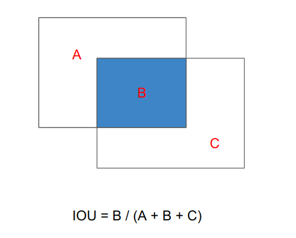
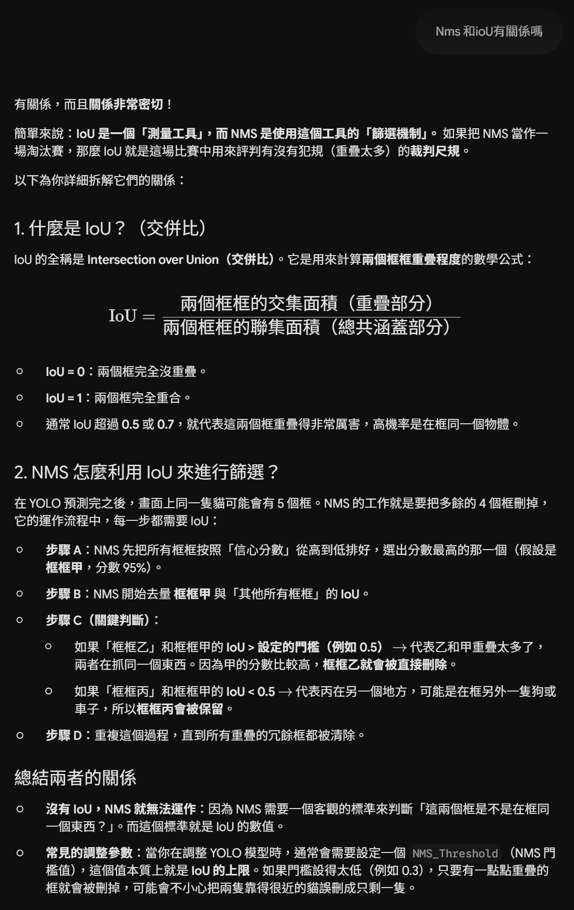
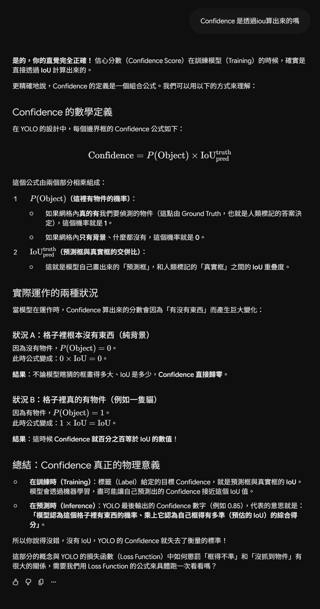
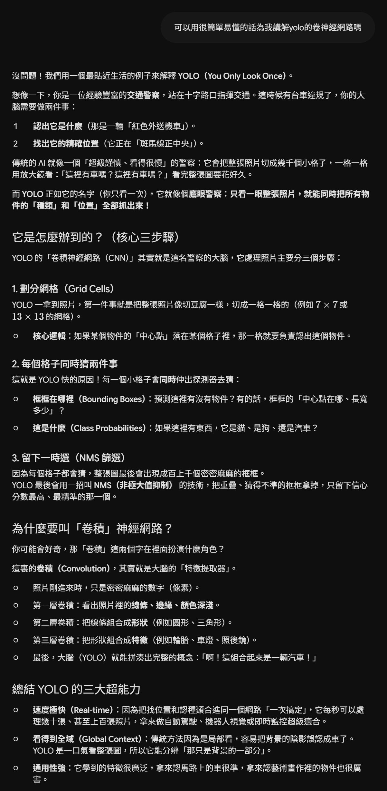
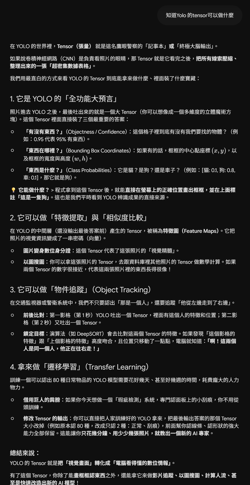
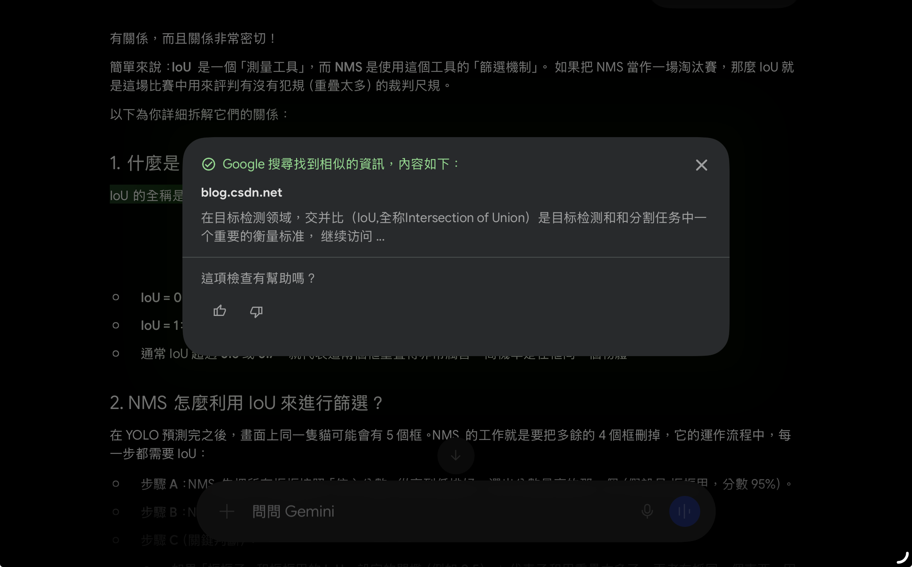
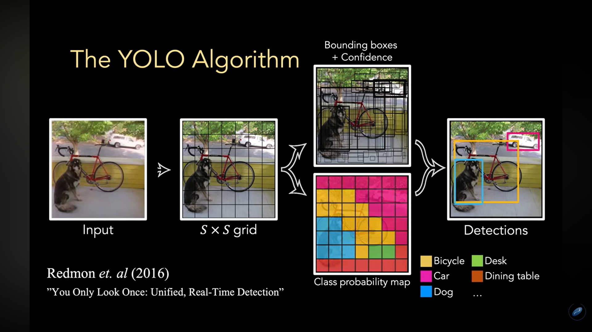
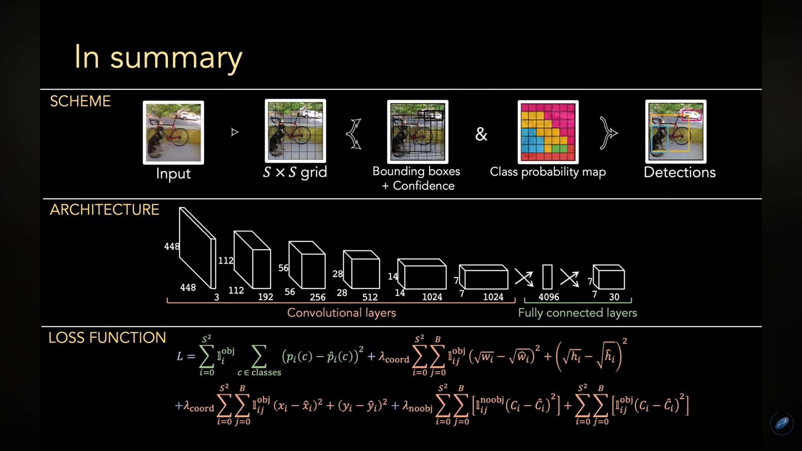

YOLO是取自於You only look once的首字母，是一種讓電腦能夠快速地識別出一張圖片中的物體和它們的位置的影像辨識模型技術。
YOLO的作用方式是將圖片分成很多小格子，分析每個格子中可能存在的物體、位置、形狀和顏色等特徵，並利用深度學習技術，經過神經網路與之前學習到的知識進行比對，得出圖片中物體的類型和位置。
其主要步驟可大致分為三類：

除了YOLO之外，還有很多一樣是用深度學習物件偵測的影像辨識模型技術。傳統的影像辨識模型會需要使用兩個神經網絡，先找出候選框後再進行分類，較為耗時和容易產生重複和錯誤的偵測，相比起來，YOLO的最大特色在於速度和精確度，同上資訊，YOLO可以將x、y、w、h、confidence these 預測組合起來，得到一個SxSx(Bx5+C)維的輸出向量（S:切成SxS個格子、B:每個格子預測B個候選框、C:C個類別機率），這個向量包含了圖片中所有物件的位置和類別資訊，並且只需要經過一次神經網路的運算就可以得到結果，所以YOLO每秒可以處理幾十張、甚至上百張的圖片且具有很高的準確性，這也是它可以很好的運用在自動駕駛、監控系統等需要快速反應的應用上。
| 對話截圖 | 重點摘要 | 理解的地方 |
|---|---|---|
|
 |
|
在找資料時，單查YOLO的資料都只有提到用NMS去消除多餘的候選框，具體怎麽消除的不清楚。後來直接搜尋NMS演算法的介紹才有提到NMS在運作時有IoU做幫忙，但因為一開始看到IoU是在如何得到Confidence的那個公式中，想說NMS中的IoU和Confidence之間有什麽關係，問了Gemini才理解整個流程，是兩個都有用到IoU這個計算方式。 |
|
 |
|
同上，查資料哦時幾乎都只是淺淺帶過信心值，知道他在YOLO裡占了很重要的一部分，有在一篇文章中看過這個公式，知道和IoU有關係，但似懂非懂，有點混肴，問Gemini後有很好的理解了Confidence的運用狀況。 |
|
 |
|
網路上關於YOLO使用的卷積神經網路的講解有些過於艱澀難懂，跟老師上課將結果的不太一樣，專有名詞很多。經過Gemini非常易懂像是在教幼兒園小朋友的講解後，我大概理解了這個神經網路主要的運作流程，至於相對邏輯數學的部分我可能暫且沒辦法整理的很好，所以上方YOLO的運作流程整體是用文字去貫穿的。 |
|
 |
|
S × S ×( B ×5+ C ) 這個公式一直看到，知道他會得到Tensor但不知道Tensor在YOLO起到了什麽作用，去查了神經網路的作用發現Gemini幾乎是把數學直接翻譯成了中文並省略了運算過程，讓我這個小白簡單的理解了一個在神經網路中占有複雜且重要地位的Tensor直接或間接影響到的結果。 |
方法：
先試試Gemini自身的查證回覆內容→

沒什麼用。
手動查詢關鍵字→NMS 介紹、YOLO中的NMS運作方式
https://ithelp.ithome.com.tw/m/articles/10350080
https://ithelp.ithome.com.tw/m/articles/10326513
修正：
Gemini給的答案和實際上網查的資料並無太多的真實性相差。


YOLO最著名的應用就是在自動駕駛上的技術。
其主要是擔任自動駕駛的“眼睛”角色，可以進行動態障礙物偵測（行人、前車、來車、摩托車......等等）、交通標誌與號誌辨識以及偵測道路的環境或遮擋物......等等。
常與其它技術整合使用增加精確性。
雖然說是用AI學習，但我認為我在給予AI prompt的技巧有些笨拙，常常沒辦法從AI那裡得到我想要的資訊，所以在開始準備報告的時候先是上網找了很多資料，老實說是有點逃避的，因為網路上對於YOLO演算法的資料有些過於零散，像是在介紹演算法的基本運作流程時就要對應好幾個網頁去整理出自己能理解的東西。我無法自己理解或找不到答案時才會尋求AI的幫助。其實我不知道這樣有沒有偏離老師一開始請我們用AI來學習的初衷，因為AI其實還沒有發展到真正完美不會出錯的階段，我也不知道它回答我的答案是不是100%正確，所以對我來說運用AI學習最放心且舒適的方法是先自己查找資料，再進行像老師讓我們做的查證和修正的動作，以確保自己得到的資訊是完全正確的。並且在自己動腦和動手查資料後，有一種踏實的成就感，這種感覺蠻不錯的，我想這可能就是最理想的使用AI的學習方法吧！在一開始其實看到有關YOLO的資料時，我感到很困惑，感覺有點超出了我所學的知識範圍，但在整個瞭解完其運作原理之後，撇除掉仍然不是很懂的神經網路部分，感覺整個演算法的過程很有趣，如果不是因為這個報告我可能很難把一個演算法理解的如此透徹，也算是吸收到了很多知識。